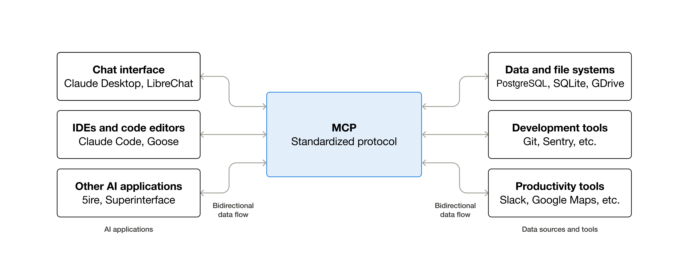

Agentic AI 之初探
文本章主要介绍 MCP Server，以及使用 AI Agents 进行 Vibe Coding 的一些记录。目前只有对与 MCP Server 的简单介绍，Vibe Coding 的部分改日再完成。
转眼间已经是 2026 年初，这离我第一次听说 ChatGPT 已经有 3 年的历史了。
曾经，Prompt Engineering 甚嚣尘上，人们纷纷相信写的一手好提示词就是跟上 AI 时代的全部；然而随着 24 年底和 25 年初 gpt-o1 和 Deepseek-R1 的横空出世，模型内置的「思维链」可以理解写得很烂的提示词，提示词工程这个词渐渐变得无人问津了。
现阶段，对于提高 LLM 工具的能力，Agentic AI 是一个比较主流的方向；即，赋予大语言模型和环境交互的能力，让它设定目标，从而在最小的人类干预下完成某个特定的功能。
MCP
- 官方文档：What is MCP?
MCP（Model Context Protocol，模型上下文协议）是一种将人工智能应用程序连接到外部系统的开源标准。

现阶段主要聚焦的是：
- 如何在应用上用 MCP 扩展大模型的能力
- 如何做一些简单的自定义——即，编写一些简单的 MCP Server，以在 AI Coding 任务中增进自我
MCP 的架构
- MCP 主机：管理一个或多个 MCP 客户端的 AI 应用程序；
- MCP 客户端：从 MCP 服务器抓取内容提供给 MCP 主机的组件；
- MCP 服务器：向 MCP 客户端提供内容的的程序；
比如，Visual Studio Code 可以看作一个 MCP 主机，它通过一个 MCP 客户端与 Sentry MCP server 联络，同时它也可以通过另外一个 MCP 客户端与其他的 MCP 服务器（比如本地文件系统）联络。
MCP 服务器可以在本地运行（使用 STDIO 运输），也可以在某个远程服务器上运行（使用流式 HTTP 传输）。
详细地了解 MCP 的架构可以参考官方文档 Architecture Overview
MCP 服务器
（以下的内容都摘自 MCP 官方文档）
MCP 服务器由 3 个重要的模块构成：
- 工具（Tools）：LLM 可以主动调用的函数，由模型控制；
- 资源（Resources）：被动的数据源，由应用控制；
- 提示（Prompts）：提示词模版，由用户控制；
| 方法 | 目的 | 返回值 |
|---|---|---|
tools/list |
列举所有可用工具 | 工具定义的列表 |
tools/call |
执行某个特定工具 | 工具执行结果 |
resources/list |
列举所有直接资源 | 资源简介的列表 |
resources/templates/list |
列举所有资源模版 | 资源模版的列表 |
resources/read |
获取资源内容 | 带元数据的资源 |
resources/subscribe |
监视资源变化 | 确认关注 |
prompts/list |
列举所有可用提示 | 提示词简介的列表 |
prompts/get |
获取提示细节 | 完整提示词定义 |
一个工具（Tool）的定义：
{
name: "searchFlights",
description: "Search for available flights",
inputSchema: {
type: "object",
properties: {
origin: { type: "string", description: "Departure city" },
destination: { type: "string", description: "Arrival city" },
date: { type: "string", format: "date", description: "Travel date" }
},
required: ["origin", "destination", "date"]
}
}
一个资源（Resource）的定义：
{
"uriTemplate": "weather://forecast/{city}/{date}",
"name": "weather-forecast",
"title": "Weather Forecast",
"description": "Get weather forecast for any city and date",
"mimeType": "application/json"
}
一个提示（Prompt）的定义：
{
"name": "plan-vacation",
"title": "Plan a vacation",
"description": "Guide through vacation planning process",
"arguments": [
{ "name": "destination", "type": "string", "required": true },
{ "name": "duration", "type": "number", "description": "days" },
{ "name": "budget", "type": "number", "required": false },
{ "name": "interests", "type": "array", "items": { "type": "string" } }
]
}
MCP 客户端
TBC
例：还原魔方的 MCP Server
这又需要回到我这篇文章的标题了，Agentic AI之初探。顾名思义，Agent 是可以和环境自由交互的模型。
B站上出现过很多诸如用大语言模型去玩狼人杀，下象棋的视频，其实在这些场景中，下象棋的每一步都可以看作大模型在调用一个函数，虽然在这些视频中并没有明确的写明。这种场景其实用 MCP server 的方式可以最好的去实现。
下面我们想实现的就是一个用于还原魔方的 MCP Server，它支持以下几种调用：
- 给魔方拍张快照，调用这个方法后，模型可以看到现在魔方状态的一张照片；
- 执行某种旋转，将魔方整体旋转，按照某个方向旋转 90 度，或者把某个可视的面旋转 90 度；
虽然用电脑还原魔方有比用大模型好得多的方法，比如各种启发式搜索，但是在这里为了展现大模型的通用智能，这个测试还是有点意思的。
在 Github 上找到了一个与其有关的开源项目但是用 Claude Code 半天也没有让它跑起来；这让我想起一个词叫做 Digital Slop，即大模型生成的垃圾内容。这个 Repository 的 README 写的特别长，一看就是 AI 写的，也许就属于这种类型。
代码的实现过程
代码使用到了一个 Python 的开源库 MagicCube。
我主要使用了 vibe coding 的方法来去编写这个示例的代码，上午我尝试使用 TRAE 来编写，结果以失败告终，下午转而用 Claude Code 接 GLM 的 API 来去写，代码重构了一遍，但还是问题比较大，主要是调用API的时候，等很长时间大语言模型也没有什么反应，可能是思考长度太长了，也有可能是语法就有问题。
实践表明，当我们用魔方展开图表示魔方状态时，大模型对魔方的还原能力很弱。这表明了大语言模型的空间推理能力有限。
Vibe Coding 的结果存储在了 xinchengo/rubiks-mcp 中（虽然结果极其有限）
结论
现阶段大模型解决魔方的能力很弱很弱，比如ChatGPT和DeepSeek，这说明它们的空间推理能力是缺失的。
这个例子不能成功实现，并不是因为 AI 编程的能力很弱，而是选取的主题不太合适，不太契合目前大语言模型的发展现状。
Vibe Coding
TBC